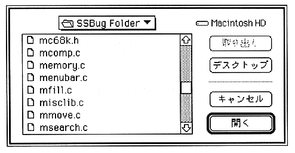
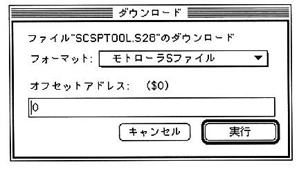

Return to previous page
｜
Return to menu
｜
Go to next page
Select “Download”.
A dialog for selecting a file appears.

Select the
file.
A dialog box for specifying the format and offset address appears.

Specify the format from the
pop-up menu and enter the offset address.
Return to previous page
｜
Return to menu
｜
Go to next page